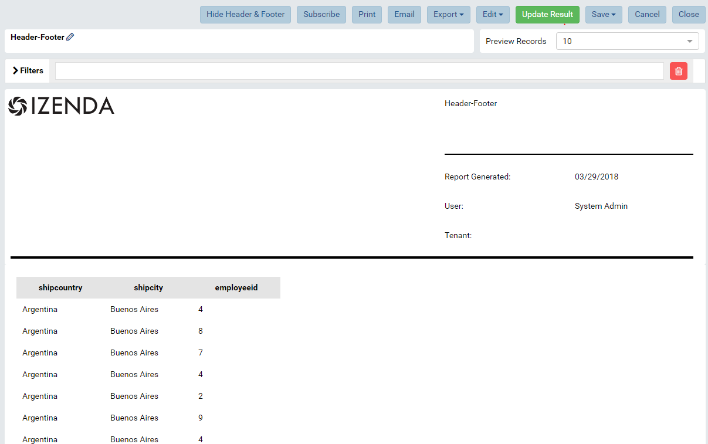

Report Viewer¶
The Report Viewer page allows user to
|
|
View Report¶
Report is initially displayed in View mode with all header, footer and report parts.
Fig. 316 View Mode
The buttons at the top allow user to:
- Add Subscriptions (See in Report List)
- Export to another format
- Quick Edit
- Design
- Copy or Move to another name or category (See in Report List Copy and Move)
- View History (See in Report List)
{kind=link}
{kind=link}
Note
For a report with filters, optionally click the Freeze button to keep the Filters section fixed while scrolling the report body.
Quick Edit Report¶
The Quick Edit button at the top switches to Quick Edit Mode.
In this mode, user can configure report part properties while keeping the selected data sources.
After editing, clik View Mode button to switch back to View mode to see the effects.
Click Save or Save As to apply the changes to report.
{kind=link}
Note
In the review mode, the report part backside is impacted by the “Show Preview section in Configuration Mode” option in Advanced Setting > Others tab like a report part in Report Designer. Please see Report Part Menu has only Configuration section for more details.
{kind=link}
Fig. 319 Preview section is hidden in a report part backside in Report Review